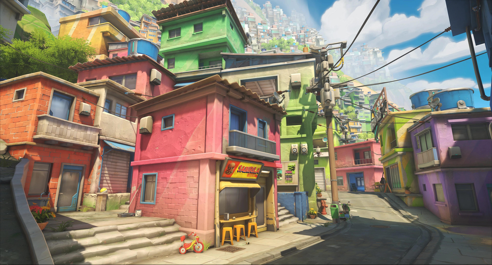

| Captura la Bandera | |
 |
En este modod de juego, dos equipos de seis jugadores compiten para capturar la bandera del equipo enemigo mientras defienden la suya. Capture the Flag es un modo de juego arcade cuyo objetivo es obtener la bandera enemiga y mantenerla el mayor tiempo posible para así ganar puntos en tu equipo y poder ganar la partida. |
| Control | |
 |
Este es un modo de juego de Overwatch 2 que se juega al mejor de dos rondas. Los jugadores tendrán que capturar un punto de interés central por dos rondas. Estar dentro del punto de interés sin ningún enemigo cerca hará que la barra de progreso empiece a llenarse. Si un equipo consigue llenar la barra de progreso al 100% entonces ganará la ronda. |
| Escolta | |
 |
Este modo de juego dispone de forma asimétrica los objetivos a cumplir. El atacante tendrá que escoltar una carga a través de unas vías que atraviesan el mapa de juego. Los defensores tendrán que evitar que avancen la carga estando cerca de ella, ya que si hay enemigos cerca la carga no puede avanzar. A lo largo del recorrido hay varios puntos de control en los que el punto de aparición de los atacantes avanzará si pasan ciertos límites. |
| Híbrido | |
|  | Este modo de juego es un modo de juego asimétrico con una división entre atacantes y defensores. En este modo de juego los atacantes tendrán que capturar un punto de interés mientras avanzan una carga a su meta. Es una combinación de los dos modos de juego anteriormente descritos. |
| Avance | |
 |
En este modo de juego los jugadores tendrán que conseguir el control de un robot, que empezará a avanzar hacia la base enemiga. Un equipo ganará si consigue llevar al robot hasta el punto de spawn del equipo enemigo. Es una especie de modo de juego inspirado en Escolta. |
| Combate por Equipos | |
 |
Dos equipos de cinco jugadores se enfrentan hasta que un equipo consigue 30 puntos. Los jugadores obtienen 1 punto para su equipo cada vez que asestan el golpe de gracia a un oponente y pierden 1 punto (también del equipo) cada vez que mueren a causa del daño del entorno o por daño autoinfligido. Esta puntuación se registrará en nuestro marcador habitual. ¡El primer equipo que llegue a 30 puntos gana! |
| Combate a Muerte | |
 |
En Combate a muerte, ocho jugadores luchan cara a cara hasta que uno de ellos consigue 20 puntos. Los jugadores obtienen 1 punto cada vez que asestan el golpe de gracia a un oponente y pierden 1 punto cada vez que mueren a causa del daño del entorno o por daño autoinfligido. Esta puntuación se registrará en un marcador completamente nuevo. ¡El primer jugador que llegue a 20 puntos gana! |